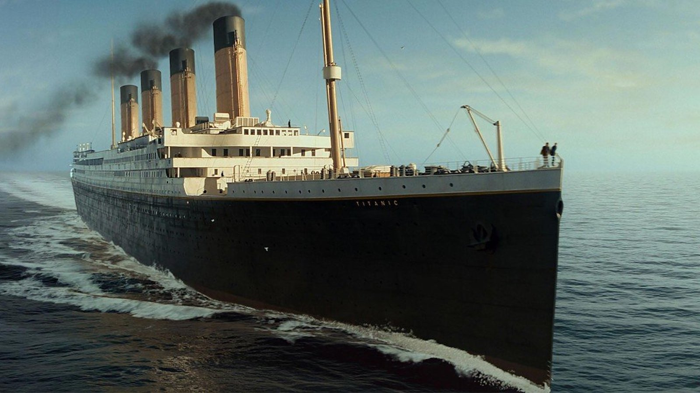
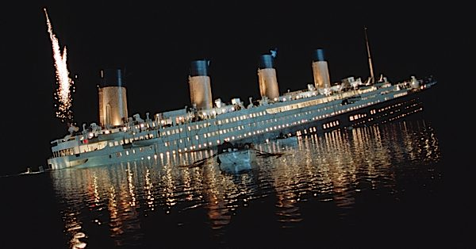
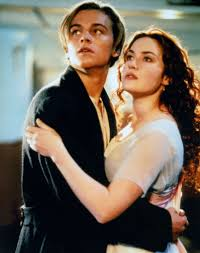

The Titanic: The Unsinkable Legend
Welcome to our dedicated page about the RMS Titanic, one of the most famous ships in history. Built as a marvel of engineering, it was deemed "unsinkable" but met a tragic fate on April 15, 1912. This site explores its construction, maiden voyage, and the unforgettable night of the disaster.

The Ship's Construction
The Titanic was built by Harland and Wolff in Belfast, Ireland, under the commission of the White Star Line. Construction began on March 31, 1909, and took over three years to complete. The ship was 882 feet long, 92 feet wide, and stood 175 feet tall, making it the largest ocean liner of its time. Its design included 16 watertight compartments, which were believed to make it "unsinkable." Over 3,000 workers were involved in its construction, using more than 3 million rivets to assemble the steel hull. The ship featured luxurious interiors inspired by the Ritz hotel, with a grand staircase, swimming pool, and elegant dining rooms. It was launched into the water on May 31, 1911, before undergoing final outfitting and testing. After completing sea trials on April 2, 1912, the Titanic was deemed ready for its maiden voyage.
Maiden Voyage and The Tragic Sinking
The Titanic set sail on its maiden voyage from Southampton, England, on April 10, 1912, bound for New York City. The ship made stops in Cherbourg, France, and Queenstown (now Cobh), Ireland, to pick up additional passengers before heading across the Atlantic. On board were over 2,200 passengers and crew, including some of the wealthiest people of the time, such as John Jacob Astor IV and Isidor Straus. The ship was celebrated for its luxurious accommodations and state-of-the-art technology, offering first-class passengers an experience like no other. Despite concerns about iceberg warnings, the Titanic continued at high speed through the North Atlantic. On April 14, 1912, at 11:40 PM, the ship struck an iceberg, causing catastrophic damage to its hull. Within hours, the "unsinkable" ship began to sink, leading to a tragic loss of over 1,500 lives. The Titanic's maiden voyage ended in disaster, becoming one of the most infamous maritime tragedies in history.

Real People on the Unsinkable Ship
Margaret (Molly) Brown - Survivor: An American socialite whose husband struck it rich in the mining business, Molly Brown was known for her flashy hats and charming personality. While she enjoyed her wealth, she spent her life giving back, advocating for the rights of women and children and the importance of education. According to various stories, Brown helped board survivors into lifeboats during the evacuation and later helped steer her own (Lifeboat No. 6). Brown, portrayed by Kathy Bates in the 1997 movie, was said to have argued with the Quartermaster to return to the debris to find more survivors and even threatened to throw him and his crew overboard if they didn't go back. (It's unclear if her boat ever returned to retrieve survivors.)
Captain Edward John Smith - Victim: Many blamed him for Titanic's demise. Critics faulted him for allowing the ship to travel close to its maximum speed despite reports of ice in the area, but it was later noted that Smith was abiding by standard maritime practice. At the time, ice was viewed as fairly harmless and even when previous ocean liners had experienced head-on collisions, the damage had been recoverable.
John Jacob Astor IV - Victim: As the richest passenger aboard the Titanic, real estate developer John Jacob Astor IV was worth $87 million when he met his fate on the sinking ship. He and his pregnant wife, Madeleine, booked a trip on the Titanic to return to the U.S. to ensure their baby would be born in America. According to eyewitnesses, Astor clung to the side of a raft, but as his body froze to death in subfreezing temperatures, he let go and drowned. When rescuers recovered his body, they found $2,400 on him.
Thomas Andrews - Victim: Thomas Andrews wasn't just any passenger on the Titanic - the Irishman was its architect. Andrews' purpose for traveling on the ship's maiden voyage was to make observations and offer suggestions for improvement. However, when the hull of the ship collided with the iceberg, the shipbuilder knew Titanic's fate was sealed. While legend has it that Andrews, played by Victor Garber in the 1997 movie, was last seen standing in the first-class smoking room gazing at a painting of Plymouth, many eyewitness accounts claim he was last seen actively assisting women and children into lifeboats and throwing chairs into the water for others to use as flotation devices. His body was never identified.

Facts about the Ship
https://www.rmg.co.uk/stories/topics/rms-titanic-facts
Legacy
The legacy of Titanic (1997) is profound, cementing its place as one of the most iconic films in cinematic history. It became one of the highest-grossing films of all time, earning over $2.2 billion worldwide. Winning 11 Academy Awards, including Best Picture and Best Director, it tied the record for most Oscar wins. The film’s historical accuracy, groundbreaking visual effects, and emotional storytelling set new standards for filmmaking. Celine Dion’s song “My Heart Will Go On” became a global hit and remains one of the most recognizable movie songs ever. The film’s impact led to renewed public interest in the real Titanic disaster, inspiring documentaries, exhibitions, and even deep-sea explorations. Over 25 years later, Titanic continues to captivate audiences with re-releases in 3D, 4K, and IMAX. Its timeless love story and tragic historical backdrop ensure that Titanic remains a beloved classic for generations to come.